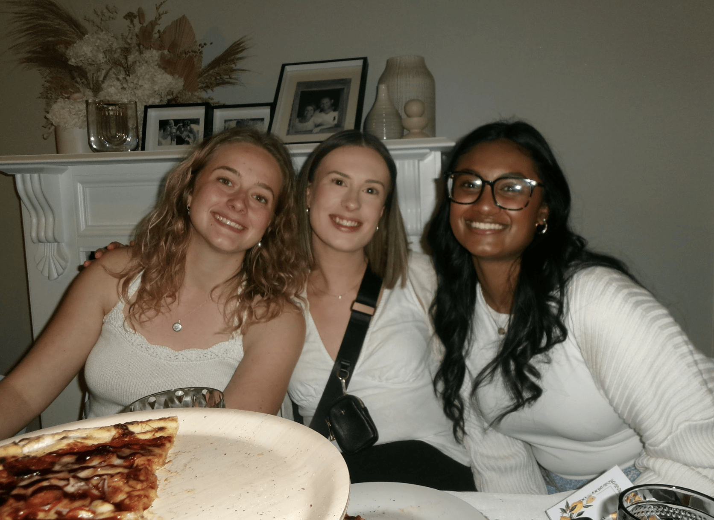
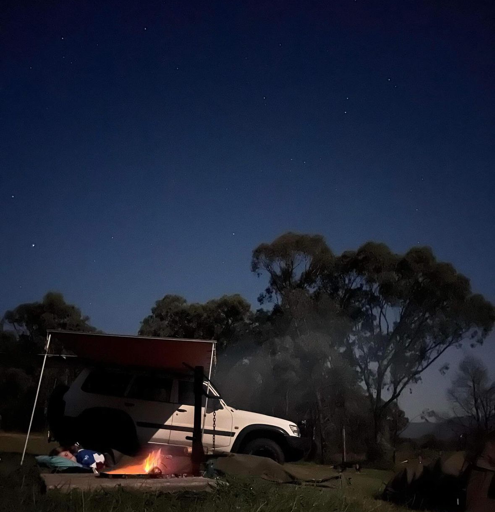
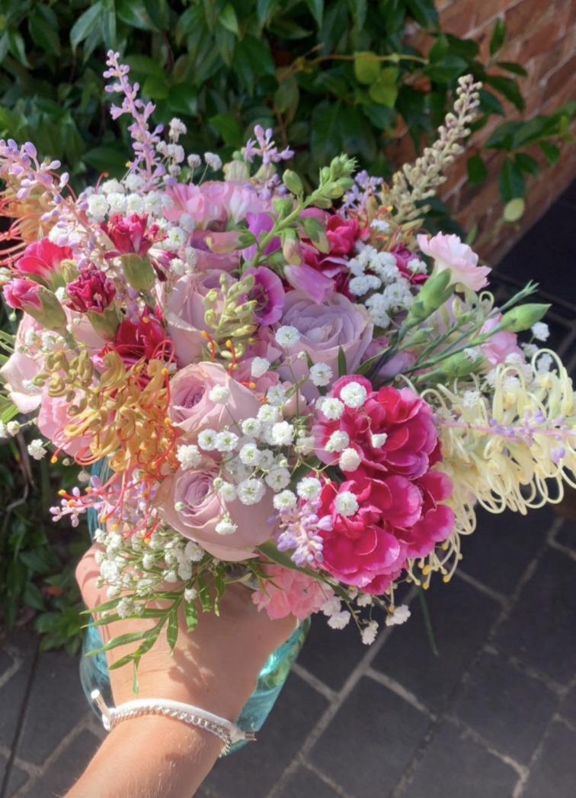

About Me
My name is Georgia Bywater I am studying my Bachelor of Arts/Bachelor of Secondary Education (Design Innovation) at Australian Catholic University, Strathfield.
More About Me
Although I have chosen teaching as my vocation, there are many hobbies that I involve myself in that keep me going. These interests might have initially sparked my interest to go into teaching, or shape the way I can bring real-world experiences into my classroom.
Adventuring
 On the weekends and holidays I love going camping with my mates. We go on overnight hikes, or 4WD to camping spots along the coast or high country. These activities keep me connected with nature and build my appreciation for the land we live in. Escaping into nature keeps me sane, allowing me to escape from city life. These outdoor activities can be brought into the cl;assroom through discussing sustainability and resourcefulness, also how nature can be a source of inspiration.
My Creative Side
 I've always been interested in anything art related, both my grandmas were very artistic and creative, in which sparks of interest started at an early age. Anything that is crafted based I will get involved in, aiming to learn new skills and build upon my existing knowledge. I love working with textiles and natural fibers to create artworks from creating garments, arranging flowers, natural dying or needle-work. I believe all students will gravitate to one aspect of art, and I want to provide them with creative freedom in my classes in which they feel comfortable to express their individuality through artform of wood, metal, textiles, food, painting, drawings and more.